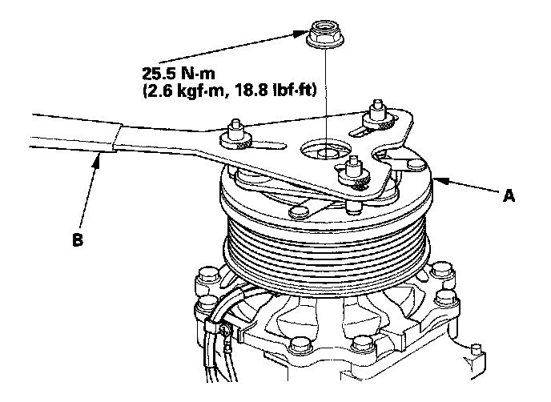
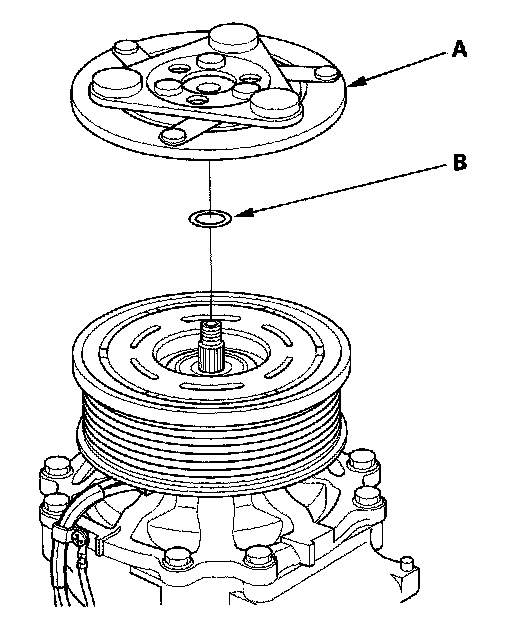
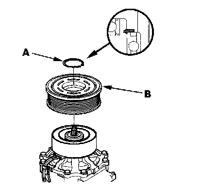
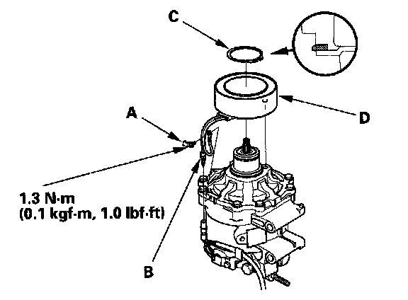

Compressor Clutch: Service and Repair
A/C Compressor Clutch OverhaulSpecial Tools Required
A/C clutch holder, Robinair 10204 or Kent-Moore J37872, or Honda Tool and Equipment KMT-J33939, commercially available

1. Remove the center nut while holding the armature plate (A) with a commercially available A/C clutch holder (B).

2. Remove the armature plate (A) and shim(s) (B), taking care not to lose the shim(s). If the clutch needs adjustment, increase or decrease the number and thickness of shims as necessary, then reinstall the armature plate, and recheck its clearance.
NOTE: The shims are available in four thicknesses: 0.1 mm, 0.2 mm, 0.4 mm, and 0.5 mm.

3. If you are replacing the field coil, remove the snap ring (A) with snap ring pliers, then remove the rotor pulley (B). Be careful not to damage the rotor pulley and A/C compressor.

4. Remove the bolt and holder (A), then disconnect the field coil connector (B). Remove the snap ring (C) with snap ring pliers, then remove the field coil (D). Be careful not to damage the field coil and A/C compressor.
5. Reassemble the clutch in the reverse order of disassembly, and note these items:
- Install the field coil with the wire side facing down, and align the boss on the field coil with the hole in the A/C compressor.
- Clean the rotor pulley and A/C compressor sliding surfaces with contact cleaner or other non-petroleum solvent.
- Install new snap rings, note the installation direction, and make sure they are fully seated in the groove.
- Make sure that the rotor pulley turns smoothly after it's reassembled.
- Route and clamp the wires properly or they can be damaged by the rotor pulley.